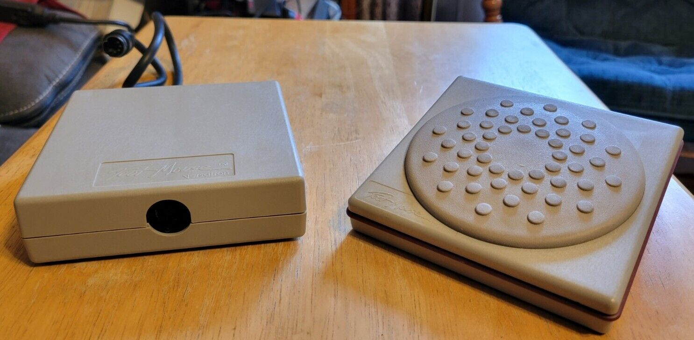

Versatron Footmouse
The first commercial foot-operated computer cursor controller — built by a missile-guidance company as their only consumer product.

Overview
The Versatron Footmouse (model FM-100) was the first commercially available foot-operated computer cursor controller, introduced in 1985 by Versatron Corporation of Healdsburg, California. Rather than functioning as a serial-port mouse, it was a keyboard-wedge device: it plugged inline between the keyboard and the PC and injected cursor-key scan codes when the user slid their foot across its surface. The base unit stayed stationary on the floor; the user moved the cursor by sliding their foot over the top in four cardinal directions — up, down, left, and right — with auto-repeat if the foot was held in position. It was designed as an assistive technology for users with disabilities or repetitive strain injuries, years before the Americans with Disabilities Act (1990). Despite its niche, the device was produced into the early 1990s and its design influenced academic research including the landmark CHI '86 paper "Of Moles and Men" by Pearson and Weiser. Versatron itself was primarily a defense contractor whose main products included actuators for the Stinger anti-aircraft missile and the precision guidance system for the Excalibur artillery shell — the footmouse was an unusual side-project from a weapons engineering firm.
Deep dive
Versatron Corporation was founded in 1980 by Al Voigt and John Speicher, both formerly of General Dynamics Pomona. The company operated out of Healdsburg, California, and by 1985 employed approximately 75 people. Their primary business was defense contracting: actuators for the Stinger missile and, later, the Control Actuation System (CAS) for the Excalibur precision-guided artillery shell. The Footmouse emerged as a commercial side-project, applying the company's precision mechanical engineering expertise to a consumer computer peripheral. It was first covered in InfoWorld on September 23, 1985, in Cynthia Harriman's article "Alternatives for cursor control: footmouse, pad, or view system."
The FM-100 Footmouse was a sliding-pedal design rather than a tilting one. The base unit (approximately 4.75 × 4.5 × 2 inches, weighing about 1 pound) sat stationary on the floor. The user placed a foot on its top surface and slid it in the desired direction. The device used a keyboard-wedge architecture: it plugged between the computer's keyboard and the system unit, intercepting and injecting cursor-key scan codes without interfering with normal keyboard operation. This meant it worked with any software that responded to keyboard cursor keys — it did not require mouse drivers or a serial port. The four cardinal directions of movement were supported, with auto-repeat when the foot was held in a position. Unlike a modern mouse, it moved in discrete directional steps rather than providing relative X/Y positioning.
The Footmouse never achieved mainstream adoption. It was referenced by the IBM National Support Center for Persons with Disabilities circa 1991 as an assistive technology product, and by 1996 it was being resold on Usenet as 'weird old computer stuff' in a moving sale. Versatron Corporation continued its defense work, being acquired by Wescam Inc. in 1995 and then by General Dynamics in 2001, where its CAS technology went into production for the Excalibur program. The Footmouse remains a curious footnote: a consumer computer peripheral designed by missile guidance engineers, addressing an accessibility need decades before it was widely recognized.
The Versatron Footmouse is referenced in the ACM CHI '86 paper "Of moles and men: the design of foot controls for workstations" by Glenn Pearson and Mark Weiser (who later pioneered ubiquitous computing at Xerox PARC). It also appears in the survey "The Feet in Human–Computer Interaction" published in ACM Computing Surveys, cementing its place as the starting point for foot-operated computer input research.
Team & pioneers
- Al Voigt. Co-founder of Versatron Corporation, formerly of General Dynamics Pomona
- John Speicher. Co-founder of Versatron Corporation
- Versatron Corporation. Healdsburg, California defense contractor; primary business was missile actuators and artillery guidance systems
Media

Sources
- Computer History Museum — Catalog entry for Versatron Footmouse FM-100
- Wikipedia — Footmouse article
- Preterhuman Vintage Wiki — Versatron Foot Mouse (detailed images and description)
- SBIR Success Story — Versatron Corp. (extensive company history)
- InfoWorld, Sept 23, 1985 — 'Alternatives for cursor control: footmouse, pad, or view system' by Cynthia Harriman
- IBM National Support Center — Footmouse description (Usenet misc.handicap, 1991)
- Pearson & Weiser, 'Of moles and men: the design of foot controls for workstations', CHI 1986